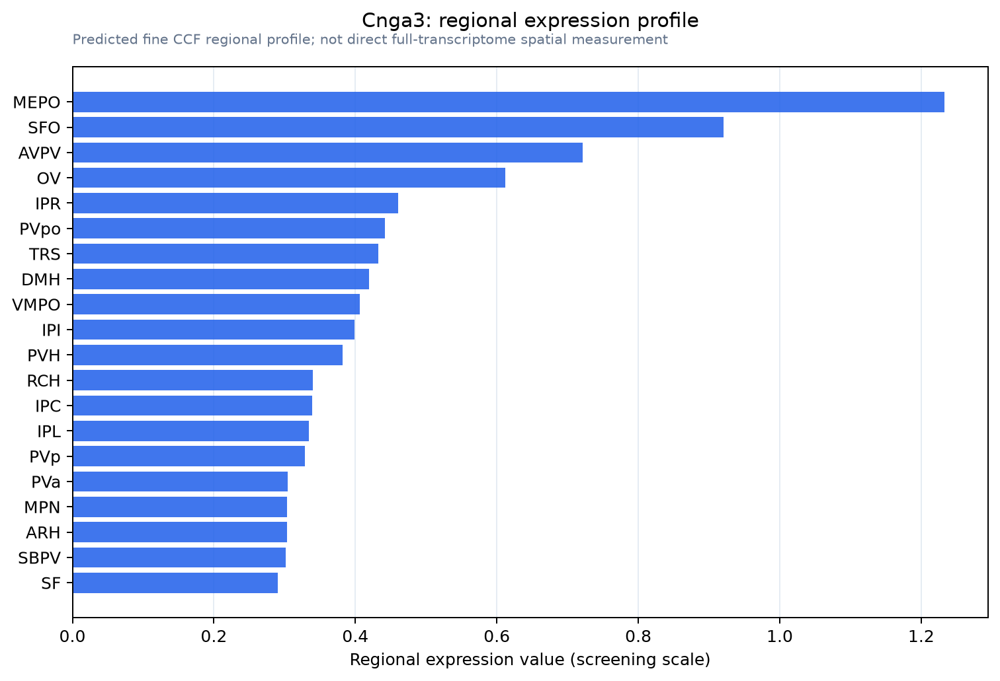

Cnga3
Cyclic nucleotide-gated channel alpha-3 (CNG channel alpha-3) (CNG-3) (CNG3) (Cone photoreceptor cGMP-gated channel subunit alpha-3) (Gustatory cyclic nucleotide-gated cation channel) (CNGgust)
Spatial tier: RESTRICTED · Class: ION_CHANNEL · Top region: MEPO (Median preoptic nucleus) · Positive regions: 21/554
46.6Discovery Score
40.1Targetability Score
CEvidence grade C
What this means: Cnga3: fine CCF profile is restricted toward MEPO (top regions: MEPO, SFO, AVPV, OV, IPR; 21 positive regions); direct spatial validation is still required.
Function in MEPO: evidence, prediction, innovation
- Gene function
- CNGA3 is the principal alpha subunit of the cone photoreceptor cyclic-nucleotide-gated channel, a non-selective cation channel opened directly by cGMP binding rather than by voltage. In cones it carries the dark current, and human CNGA3 mutations cause achromatopsia. The same subunit also forms cyclic-nucleotide-gated channels in olfactory and gustatory tissue.
- Region function
- The median preoptic nucleus is the integrative node of the lamina terminalis thirst and thermoregulation circuit, combining osmotic and angiotensin signals from the subfornical organ and OVLT with skin and core temperature information to drive drinking, sodium appetite, heat loss and sleep.
- Published in this region
- direct Direct at the level of the preoptic area. Feketa et al. 2020 compared mice with hibernating thirteen-lined ground squirrels and found that mice have a larger proportion of cold-sensitive neurons in the preoptic area of the hypothalamus, that these mouse cold-sensitive POA neurons express CNGA3, and that mouse but not squirrel CNGA3 is potentiated by cooling, identifying CNGA3 as a hypothalamic cold sensor and a molecular marker for the thermoregulatory circuit. The study sampled the preoptic area broadly rather than isolating the median preoptic nucleus.
- Predicted function
- Prediction: within the lamina terminalis, CNGA3 is predicted to be the conductance that makes median preoptic neurons intrinsically cold-sensitive, so that local brain cooling can trigger heat-conserving and heat-generating responses independently of skin afferent input. Conditional Cnga3 deletion restricted to MEPO glutamatergic neurons is predicted to abolish the intrinsic cold response of these cells in slices, blunt brown-adipose thermogenesis and vasoconstriction during local preoptic cooling, and widen the thermoneutral zone in vivo, while leaving skin-driven warm-defence responses intact; chemogenetic activation of Cnga3-expressing MEPO neurons should conversely drive hyperthermia.
- Innovation
- ★★★☆☆ 3/5 The key discovery has been made at preoptic-area resolution, but nobody has tested CNGA3 specifically in the median preoptic nucleus or manipulated it conditionally in vivo, leaving the causal thermoregulatory experiment open.
- Tools
- Cnga3 knockout mice (cpfl5 and targeted alleles, widely available from achromatopsia research) and Cnga3 floxed lines; CNG channel blockers L-cis-diltiazem and pseudechetoxin; cGMP analogues 8-Br-cGMP and CPT-cGMP; anti-CNGA3 antibodies; Slc17a6-Cre, Adcyap1-Cre and Ptger3-based preoptic drivers plus telemetric core-temperature and brown-fat thermography readouts.
- References
Direct evidence located at the region
No Allen ISH section could be located at this region's centroid for the recorded experiments.
Look it up yourself: Allen Mouse Brain ISH for Cnga3Allen reference atlas: MEPO (structure 452)ABC Atlas MERFISH viewer(in the ABC Atlas choose dataset MERFISH-C57BL6J-638850-CCF, colour cells by gene "Cnga3" or by parcellation_substructure "MEPO")All genes confined to MEPO + 3-D brain
Direct spatial evidence
MERFISH REGION LOCATOR

Regional expression figure

Predicted WMB × fine-CCF profile; not direct full-transcriptome spatial measurement.
Spatial profile
Evidence and specificity
- Evidence status
- PREDICTED_FINE
- Direct sources
- None; predicted localization only
- Exclusive threshold
- 12 positive regions out of 554
- Spatial specificity
- 0.351
- Top-region fraction
- 0.081
- Filter status
- PASS
Interpretation limits
- Cell-type-to-region projection is imputed expression, not direct spatial measurement.
- Adult reference atlases do not establish stability across age, sex, strain, state, or disease.
- Transcript abundance does not guarantee protein abundance or genetic-tool performance.